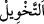

ortaklarımız sandığınız şefaatçılarınızı da yanınızda göremeyeceğiz. Andolsun,
aranız açılmış ve (tanrı) sandığınız şeyler sizden kaybolup gitmiştir.
“Andolsun,” hesaba çekilmek ve yaptıklarınızın karşılığını görmek üzere “İlk kez
yaratıldığınız gibi yine tek olarak bize geldiniz.” Buradaki “geldiniz” fiili müstakbel
manasınadır ve “geleceksiniz” demektir. Mutlaka tahakkuk edeceği için geçmiş zaman
sîgasıyla ifade edilmiştir. Bu, “Allah’ın emri geldi, artık acele etmeyin” âyetinde (en-
Nahl, 16/1) olduğu gibidir. Âyetin muhatabı Kureyşli müşriklerdir. Çünkü onlar
büyüklenerek ve fakir müslümanları hafife alarak: “Biz dünyada malca ve evlâdca
onlardan zenginiz, şu halde ahirette de bize azab edilmeyecek” demişlerdi.
“Tek olarak” ifadesinden maksat, mallarınızdan, evlatlarınızdan ve üstün tuttuğunuz
diğer dünyalıklardan ayrı olarak, demektir.
“İlk kez yaratıldığınız gibi” ifadesinin anlamı, “doğduğunuz gündeki gibi yalnız ve
tek” demektir. Ya da ilk yaratılışınız (doğduğunuz günkü) gibi yalın ayak, başı açık,
çıplak ve sünnetsiz olacaksınız anlamındadır. O gün üzerlerinde dünyada iken
bazılarına ârız olan abraşlık (ala tenlilik hastalığı) ve topallık gibi haller olmayacaktır.
Kâmûs’da böyle denilmiştir.
Bir hadiste şöyle buyurulmuştur: “İnsanlar kıyamet gününde yalın ayak, çıplak ve
sünnetsiz olarak haşr olunacaklardır.” Bunu işiten Hz. Aişe validemiz “Eyvah, o gün
kadınların ve erkeklerin avret yerleri açık mı olacak?” deyince, Rasûlullah (s.a.) şöyle
buyurmuşlardır: “O günde herkesin kendine göre bir derdi vardır.” (Abese, 80/37)
Erkekler kadınlara, kadınlar da erkeklere bakamazlar. Onlar başkasıyla uğraşma
imkanı bulamayacaklardır.”[141]
“Ve size ihsân ettiğimiz” dünyada size lutfettiğimiz ve onlarla oyalanıp âhireti
unuttuğunuz “şeyleri arkanızda bıraktınız.”
“
” (nimetlendirme), hizmetçi, tâbi ve taraftar vermek ya da karşılıksız vermek
anlamındadır.
“Arkanızda bıraktınız.” Yani, onlardan bir şey getirmediniz. Mü’minler bunun aksine
dünyada iken bütün gayretlerini, sahih akideye ve sâlih amellere sarfetmişlerdir.
Amelleri kabirde onların yoldaşı olmuş, onlarla beraber kıyamet sahnesine gelmiştir.
Dolayısıyla mü’minler gerçek anlamda yalnız gelmemişlerdir.
Burayı terkedip ahirete gittiğinde
Şükür evinde ebedî olarak şükredersin
“Hani” putlardan “bizim ortaklarımız” sizin rabbiniz ve ibadetinize müstahak
“sandığınız şefaatçilerinizi de yanınızda görmüyoruz!” Şüphesiz, aranızdaki bağlar
kesilmiş.” Yani putlarınızla aranızda var olduğunu söylediğiniz irtibat kopmuş. Kaşifî
şöyle demiştir: Aranızda olan vuslat ve sevgi koptu.
“Ve” şefaatçileriniz “sandığınız şeyler sizden kaybolup gitmiştir.” Bâtıl ve zayi
olmuştur. Sizden azabı gidermeye güçleri yetmemiştir.